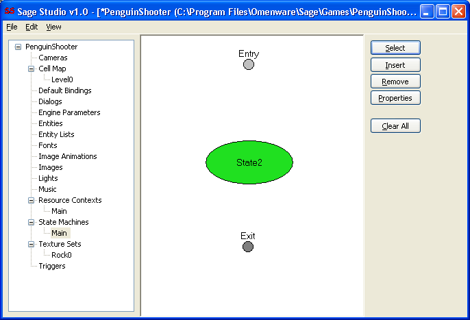
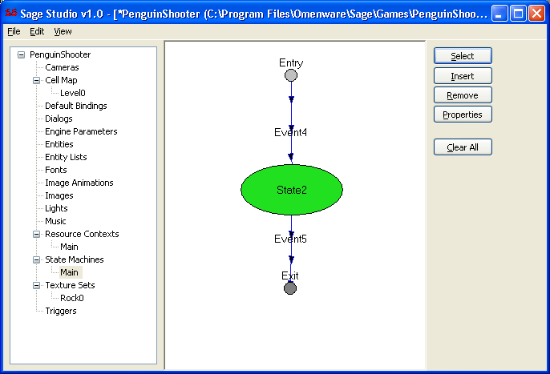
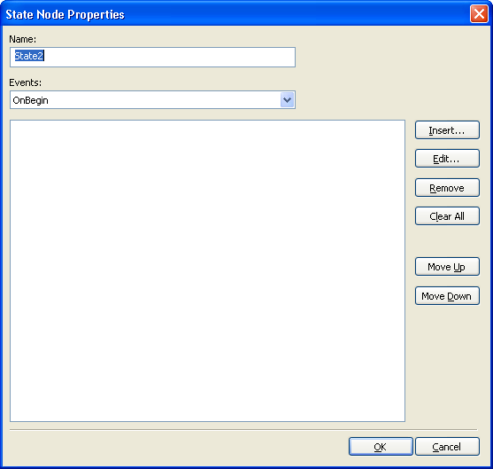
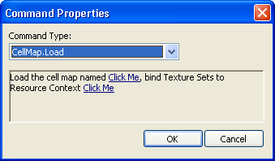
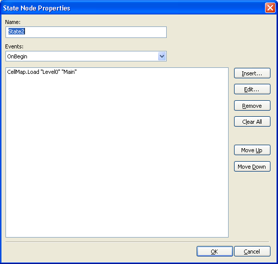
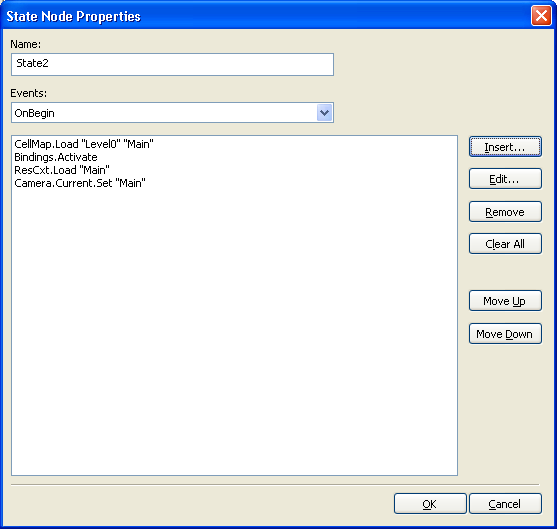
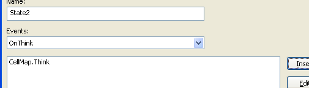
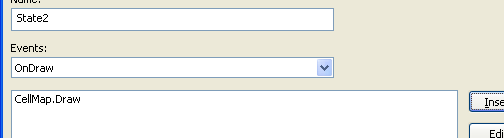
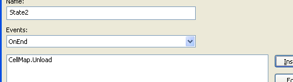
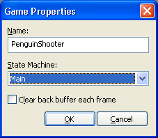

Right click on State Machines in Game Manager and choose Insert. Call the State Machine whatever you like, I called mine Main. As soon as you click OK from the dialog box, an item is inserted into Game Manager with the name you entered, and it is selected by SageStudio. This causes the main view to show the State Machine editor.
| Click on the Insert button on the right side of the main view. This reveals the items available to insert. Click Entry Node and then move the mouse cursor into the main white area of the editor and left click to place the Entry Node. It doesn't matter where your place it. |
Now insert an Exit Node and a State Node. Your State Machine should look something like the following.

Now lets connect them together. Click the Insert button once again and choose Event from the popup menu. Move the mouse cursor over the Entry Node in your State Machine, and click and drag to the State Node, and release the mouse button. This causes the State Machine editor to create an Event between the two Nodes. Take note of the direction arrows on the event - they must point from the Entry Node to the State Node. Now do the same for the State Node to the Exit Node. Be sure to drag from the State Node to the Exit Node, not the other way around. Your State Machine should look like this:

You can move the Nodes and Events around by dragging them if you wish. Where they are located doesn't have any effect on your game.
Logically what our State Machine is saying to SageEngine at this stage is: When the game starts go to the State2 state. Then some event within that state will cause it to follow Event5 and exit the application. So it's a trivial state machine at the moment.
Nothing is happening within the State2 state, so let's change that. Double click your State Node to show the properties dialog, shown here:

What we want to do is get SageEngine to load the map we just created, named Level0, when the game begins. So the logical choice is to ask SageEngine to do a map load when our one and only state we've inserted begins. We'll leave the Events droplist on the OnBegin event because that's the event we want to add a command to. Press the Insert button to choose a command to insert. Change the Command Type droplist to CellMap.Load. The dialog should look like this:

Click the first Click Me link and choose your map from the dialog. Click the second Click Me link and click your Resource Context, named Main, if you followed along correctly. Click OK and SageStudio will insert your command into the State, as follows:

This is a good start, but there's a few more things we need to do to instruct SageEngine correctly:
We haven't added a camera yet, so let's do that. It only takes a few clicks of the mouse button. Close the State Properties dialog by clicking OK. Right click on Cameras in Game Manager, choose Insert and name your camera Main. Click OK. We're done there.
Left click your State Machine in Game Editor, and double click on your one and only state to open the State Properties dialog again. Click Insert, choose the command named Camera.Current.Set, and then click the Click Me link and choose the camera you just added, named Main. Click OK. Your State Properties Dialog should look like this:

Only one last touch to do for this event: Select the CellMap.Load line in the list box, and move it to the bottom by using the Move Down button. This is necessary because SageEngine must load your Resource Context before it loads the map, otherwise it won't find the Textures to map onto the polygons; it makes sense, they wouldn't be loaded yet.
With the State Properties Dialog still open, select the OnThink event from the Events droplist. Click Insert and choose the CellMap.Think command and click OK. Your dialog should look like this:

With the State Properties Dialog still open, select the OnDraw event from the Events droplist. Click Insert and choose the CellMap.Draw command and click OK. Your dialog should look like this:

With the State Properties Dialog still open, select the OnEnd event from the Events droplist. Click Insert and choose the CellMap.Unload command and click OK. Your dialog should look like this:

And finally we're done with this State. Quite a few little steps to fill in, but all necessary so that you can control SageEngine. Click the OK button on the State Properties Dialog and be sure to save your game by pressing Ctrl+S.
The final step we need to do before this game will run in SageEngine is to associate this State Machine with our game. That's really easy to do - right click on your game tree item in Game Manager and select Properties, choose the State Machine from the droplist and click OK. Be sure to save, Ctrl+S.

Now the game will run in SageEngine. I recommend you read Running a game next.
Back to the Index